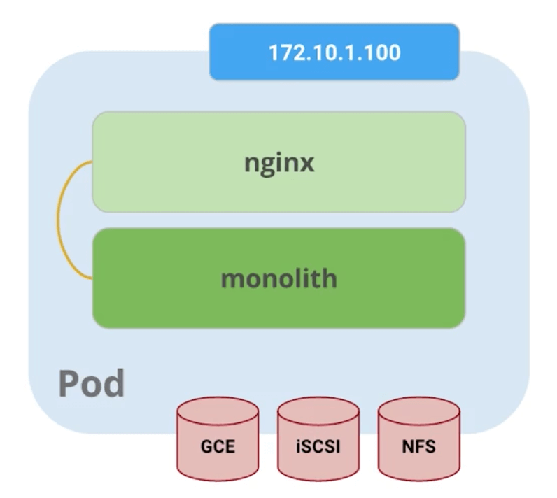

Docker 基础记录（三）
本篇将讨论 Docker 用于构建微服务的相关实践。如何将 Docker 用于生产环境，并且构建一个更复杂的多容器应用？同时利用链接和卷等 Docker 特性来管理 Docker 中的应用，以及 Docker 集群等。
1、Docker Compose：
Docker Compose 可以进行简单的容器编排，将容器服务化。安装 Docker Compose。
# 安装 Docker Compose；
sudo curl -L https://github.com/docker/compose/releases/download/1.17.0/docker-compose-`uname -s`-`uname -m` -o /usr/local/bin/docker-compose
sudo chmod +x /usr/local/bin/docker-compose
docker-compose --version
编写 Dockerfile 以及应用程序相关的文件。
# Dockerfile；
FROM python:2.7
MAINTAINER YHSPY <yhorg@hotmail.com>
ENV REFRESHED_AT 20167-11-09
ADD . /composeapp
WORKDIR /composeapp
RUN pip install -r requirements.txt
# Application(app.py/requirements.txt)；
...
编写 docker-compose.yml 配置 Docker Compose 来创建服务。
version: '3'
services:
web:
image: jamtur01/composeapp
command: python app.py
ports:
- "5000:5000"
volumes:
- .:/composeapp
links:
- redis
redis:
image: redis
运行服务。
docker-compose up
docker-compose logs
docker-compose stop
docker-compose kill
docker-compose rm
docker-compose ps
2、Consul、服务发现和 Docker：
（待补充）
3、Docker Swarm：
Docker Swarm 是一个原生的 Docker 集群管理工具，支持容器的跨宿主节点的集群管理。
# 拉取 Docker Swarm 镜像；
sudo docker pull swarm
# 初始化主节点；
sudo docker swarm init --advertise-addr <manager-ip>
sudo docker info
sudo docker node ls
# 设置从节点；
(Optional) sudo docker swarm join --token <token> 127.0.0.1:2377
# 创建服务；
sudo docker service create --replicas 1 --name <name> -p <local>:<remote> -e "ENV_PASS=yue.lu" -t <image>
sudo docker service ls
sudo docker service inspect <name>
sudo docker service rm <name>
4、Kubernetes：
Kubernetes是一个开放源代码系统，用于跨多个主机来管理 Docker 化等应用程序，为应用程序的部署，维护和扩展提供基本的功能。我们这里使用 Minikube 在本地创建一个单节点单 Kubernetes 集群，同时使用 kubectl 命令行工具来管理 Kubernetes 集群（kubectl 是一个用于操作 Kubernetes 集群的命令行接口）。
# 首先安装 kubectl 命令行工具；
curl -LO https://storage.googleapis.com/kubernetes-release/release/$(curl -s https://storage.googleapis.com/kubernetes-release/release/stable.txt)/bin/linux/amd64/kubectl
chmod +x ./kubectl
sudo mv ./kubectl /usr/local/bin/kubectl
# 可选的本机单集群；
# https://github.com/kubernetes/minikube
curl -Lo minikube https://storage.googleapis.com/minikube/releases/latest/minikube-linux-amd64 && chmod +x minikube && sudo mv minikube /usr/local/bin/
minikube version
minikube start
安装依赖 VirtualBox（由于 ECS 等云服务器本身即基于虚拟化的产品，因此并不能在 ECS 等产品上再使用嵌套的虚拟化服务 /proc/xen）。
cd /etc/yum.repos.d/
wget http://download.virtualbox.org/virtualbox/rpm/rhel/virtualbox.repo
yum update
yum install binutils qt gcc make patch libgomp glibc-headers glibc-devel kernel-headers kernel-devel dkms
export KERN_DIR=/usr/src/kernels/<kernels_version>
yum install VirtualBox-5.2
kubectl run <name> --image=<image>
kubectl get pods
kubectl expose deployment <name> --port <port> --type LoadBalancer
kubectl get services
通过配置文件来创建 Pods，Pods 是一个或一组容器的集合，每一个 Pods 对应于一个逻辑上的应用程序。Pods 内部还有 Volumes，这些 Volumes 组成了该 Pods 的数据层。整个 Pods 共享一个网络命名空间（IP），内部的容器和 Volumes 之间可以相互访问。

# pods.yaml
apiVersion: v1
kind: Pod
metadata:
name: monolith
labels:
app: monolith
spec:
containers:
- name: monolith
image: udacity/example-monolith:1.0.0
args:
- "-http=0.0.0.0:80"
- "-health=0.0.0.0:81"
- "-secret=secret"
ports:
- name: http
containerPort: 80
- name: health
containerPort: 81
resources:
limits:
cpu: 0.2
memory: "10Mi"
livenessProbe:
httpGet:
path: /healthz
port: 81
scheme: HTTP
initialDelaySeconds: 5
periodSeconds: 15
timeoutSeconds: 5
readinessProbe:
httpGet:
path: /readiness
port: 81
scheme: HTTP
initialDelaySeconds: 5
timeoutSeconds: 1
kubectl create -f pods.yaml
kubectl get pods
kubectl describe pods monolith
kubectl port-forward monolith 10080:80 # 端口代理；
kubectl logs monolith
kubectl exec monolith --stdin --tty -c monolith /bin/sh # 打开一个与 Pods 进行交互的终端；
Docker 常用命令总结：
# remove exited containers:
docker ps --filter status=dead --filter status=exited -aq | xargs -r docker rm -v
# remove unused images:
docker images --no-trunc | grep '<none>' | awk '{ print $3 }' | xargs -r docker rmi
评论 | Comments